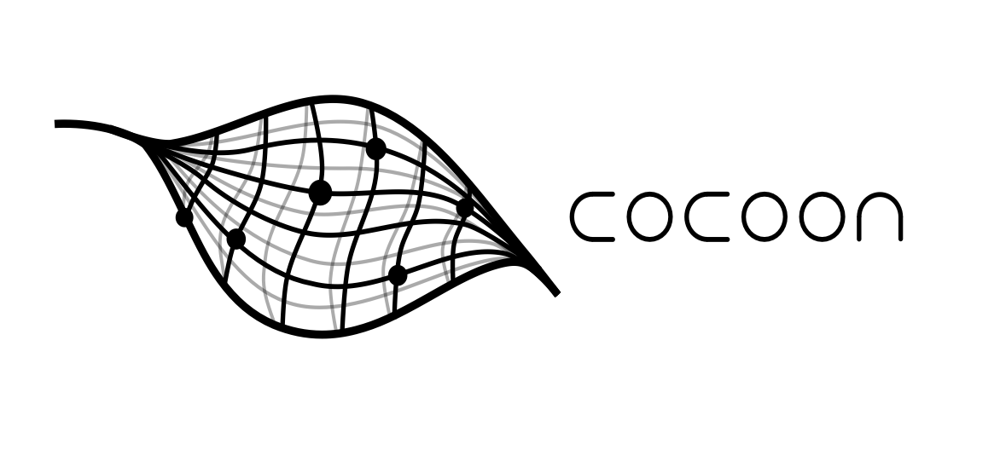

<div class="text_center_fullscreen">
  <div class="home_inner" style="width:90%">
    
    

 <h2>Cocoon: Towards Fluid Energy-Efficient Cell-Free Networks through Citizen’s Co-Creation</h2>
    <p>Next-Generation Network Built Around Users, Not User Equipment</p>
    <p>Joris Putteneers, Viktoriya Postulga, Gilles Callebaut</p>
    <br><br>
    <br><br>
 
    <h3>Research questions</h3> <br><br>
    <div>
      <p>1) Can low-overhead legacy-device measurements reduce the need for full CSI when characterizing low-height channels and guiding network adaptation?</p> <br>
      <p>2) Modeling low-height, user-proximate links: existing approaches, their limitations, and paths toward improved models</p> <br>
      <p>3) Measurement-informed, continuous adaptation of distributed wireless networks with physical CSP relocation as a new degree of freedom</p> <br>
      <p>4) Characterizing wireless networks from a user-value perspective to uncover overlooked spatial and temporal usage patterns and inform more meaningful optimization</p> <br>
      <p>5) Community agency in wireless-network co-creation: low-burden ways to give users meaningful influence over shared infrastructure</p> <br>
      <p>6) Wireless infrastructure as part of the urban ecology: designing its presence to support meaningful interaction and public acceptance</p> <br>
      <p>7) A socio-technical deployment protocol for co-created wireless infrastructure: translating technical, regulatory, spatial, aesthetic, and participation requirements into actionable rules and heuristics</p> <br>
    </div>
    <br>

    <div class="image_grid_200px_labeled" style="grid-template-columns:repeat(4, 1fr);">
      <div class="item"></div>
      <div class="item"></div>
      <div class="item"></div>
      <div class="item"></div>
      <div class="item"></div>
      <div class="item"></div>
      <div class="item"></div>
      <div class="item"></div>
    </div>
    <br><br>

    <div style="display:flex; justify-content:flex-end; align-items:center; gap:10px;">
      
      
       
    </div>

  </div>
</div>